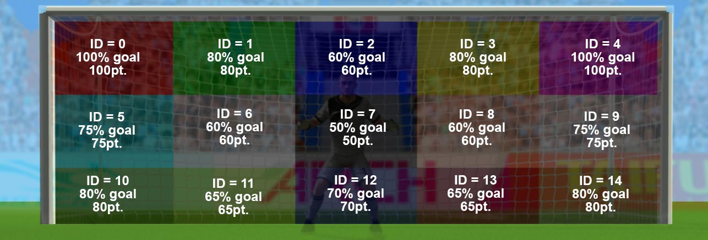

“Penalty Challenge” Documentation by “Code This Lab S.r.l.” v1.0
“Penalty Challenge”
Created: 23/04/2018
By: Code This Lab S.r.l.
Email: info@codethislab.com
Thank you for purchasing our game. If you have any questions that are beyond the scope of this help file, please feel free to email via user page contact form here. Thanks so much!
Table of Contents
- Description
- Folder Contents
- Getting Started
- HTML Structure
- CSS Files and Structure
- Source Code
- Game functions
- Change Graphic
- Disable Sounds
- Wordpress Plugin
A) Description - top
Select between 32 different team your favorite one.
You have 5 attempts to pass the goalie and other 5 to save your opponent's kicks!
It's all in your hands and feet!
The ZIP package contains the game with 1280x640 resolution that scales to fit the whole screen device
Just warning that for very wide screens, the game may not be perfectly full screen.
The game is fully compatible with all most common mobile devices.
Sounds are enabled for mobile but we can't grant full audio compatibility on all mobile devices due to some well-know issue between some mobile-browser and HTML5.
So if you want to avoid sound loading, please read Disable Sound section).
WARNING: Sounds can't be enabled for Windows Phone as this kind of device have unsolved issues with 'audio' and 'video' tag.
B) Folder Contents - top
The item package contains the following folders:
- ctl_arcade_wp_plugin:
This folder contains the game version (zip file inside) that can be used with wordpress plugin CTL Arcade - game:
This folder contains the full source code that you can edit as you need. - live_demo:
This folder contains the obfuscated version of the game. WARNING: you should use this version if you don't have to edit the original game. - readme:
This folder contains the readme of the game.
C)Getting Started - top
To install the game just upload on your server the game folder live_demo.
- Game Embedding: The proper way to embed the game is in a full-screen web page or in an iframe.
In the first case the game will fit the screen size, in the second, that of the iframe.
If the iframe size matches that of the screen, the game will fit accordingly.
The alignment will be proportioned to the aspect ratio of the game.
To install the game in a WordPress website, we suggest to use our plugin CTL Arcade .
- Localization: You can easily change game text for different languages, changing string in CLang.js
var TEXT_MULTIPLIER = "x"; var TEXT_SCORE = "SCORE"; var TEXT_LEVEL_SCORE = "LEVEL SCORE"; var TEXT_TOTAL = "TOTAL SCORE"; var TEXT_GOAL = "GOAL!"; var TEXT_ARE_SURE = "ARE YOU SURE YOU WANT TO EXIT THE GAME?"; var TEXT_CONFIRM_DELETE = "ALL SAVING WILL BE DELETED! ARE YOU SURE?"; var TEXT_SAVED = "SAVED!"; var TEXT_MISSED = "MISS!"; var TEXT_HELP = "SWIPE TO KICK THE BALL"; var TEXT_HELP_KEEPER = "TAP THE SCREEN TO LET THE OPPONENT KICK"; var TEXT_WIN = "YOU WON"; var TEXT_LOSE = "YOU LOSE"; var TEXT_CREDITS_DEVELOPED = "DEVELOPED BY"; var TEXT_VS = "VS"; var TEXT_MATCH = "MATCH"; var TEXT_SELECT_TEAM = "SELECT YOUR TEAM"; var TEXT_MATCHES = "MATCHES"; var TEXT_ERR_LS = "YOUR WEB BROWSER DOES NOT SUPPORT LOCAL STORAGE. IF YOU'RE USING SAFARI, IT MAY BE RELATED TO PRIVATE BROWSING. AS A RESULT, SOME INFO MAY NOT BE SAVED OR SOME FEATURES MAY NOT BE AVAILABLE."; var TEXT_TEAM = new Array(); TEXT_TEAM[0] = "RUSSIA"; TEXT_TEAM[1] = "JAPAN"; TEXT_TEAM[2] = "IRAN"; TEXT_TEAM[3] = "BRAZIL"; TEXT_TEAM[4] = "MEXICO"; TEXT_TEAM[5] = "BELGIUM"; TEXT_TEAM[6] = "SOUTH KOREA"; TEXT_TEAM[7] = "SAUDI ARABIA"; TEXT_TEAM[8] = "GERMANY"; TEXT_TEAM[9] = "ENGLAND"; TEXT_TEAM[10] = "SPAIN"; TEXT_TEAM[11] = "NIGERIA"; TEXT_TEAM[12] = "COSTA RICA"; TEXT_TEAM[13] = "POLAND"; TEXT_TEAM[14] = "EGYPT"; TEXT_TEAM[15] = "SERBIA"; TEXT_TEAM[16] = "ICELAND"; TEXT_TEAM[17] = "FRANCE"; TEXT_TEAM[18] = "PORTUGAL"; TEXT_TEAM[19] = "URUGUAY"; TEXT_TEAM[20] = "ARGENTINA"; TEXT_TEAM[21] = "COLOMBIA"; TEXT_TEAM[22] = "PANAMA"; TEXT_TEAM[23] = "SENEGAL"; TEXT_TEAM[24] = "MOROCCO"; TEXT_TEAM[25] = "TUNISIA"; TEXT_TEAM[26] = "SWITZERLAND"; TEXT_TEAM[27] = "CROATIA"; TEXT_TEAM[28] = "SWEDEN"; TEXT_TEAM[29] = "DENMARK"; TEXT_TEAM[30] = "AUSTRALIA"; TEXT_TEAM[31] = "PERU";
D)HTML Structure - top
This game have the canvas tag in the body. The ready event into the body calls the main function of the game: CMain().
The head section declares all the javascript functions of the game. The whole project uses a typical object-oriented approach.
In the init function there are 8 mapped events that can be useful eventually for stats
var oMain = new CMain({
area_goal: [{id: 0, probability: 100}, {id: 1, probability: 80}, {id: 2, probability: 60},
{id: 3, probability: 80}, {id: 4, probability: 100}, {id: 5, probability: 75},
{id: 6, probability: 60}, {id: 7, probability: 50}, {id: 8, probability: 60},
{id: 9, probability: 75}, {id: 10, probability: 80}, {id: 11, probability: 65},
{id: 12, probability: 70}, {id: 13, probability: 65}, {id: 14, probability: 80}], //PROBABILITY AREA GOALS START TO LEFT UP TO RIGHT DOWN
//0 1 2 3 4
//5 6 7 8 9
//10 11 12 13 14
score_goal:10,
score_goal_missed:-5,
score_ball_saved: 5, //ADD SCORE WHEN THE GLOVES SAVE BALL
score_goal_opponent: -5, // ADD SCORE WHEN THE OPPONENT GOAL
audio_enable_on_startup:false, //ENABLE/DISABLE AUDIO WHEN GAME STARTS
check_orientation:true, //SET TO FALSE IF YOU DON'T WANT TO SHOW ORIENTATION ALERT ON MOBILE DEVICES
fullscreen: true //SET THIS TO FALSE IF YOU DON'T WANT TO SHOW FULLSCREEN BUTTON
});
The goal area (area_goal variable) is divided in several squares, you can make the game harder/easier by decreasing/increasing the possibility to score a goal in each area.
See image below:

E) CSS Files and Structure - top
The game use two CSS files. The first one is a generic reset file. Many browser interpret the default behavior of html elements differently. By using a general reset CSS file, we can work round this. Keep in mind, that these values might be overridden somewhere else in the file.
The second file contains all of the specific stylings for the canvas and some hack to be fully compatible with all most popular mobile devices
F) Source Code - top
This game contains:
- jQuery
- Our custom scripts
- CreateJs plugin
- Howler Sound library
- jQuery is a Javascript library that greatly reduces the amount of code that you must write.
- The game have the following js files:
- CMain: the main class called by the index file.
This file controls the sprite_lib.js file that manages the sprite loading, the loop game and initialize the canvas with the CreateJs library - ctl_utils: this file manages the canvas resize and its centering
- sprite_lib: this class loads all images declared in the main class
- settings: general game settings
- CCreditsPanel: this class show credits panel.
- CLang: global string variables for language localization
- CPreloader: simple text preloader to show resources loading progress
- CMenu: simple menu with the play button
- CGfxButton: this class create a standard button
- CToggle: this class create a standard toggle button
- CTextButton: this class create a standard text button
- CGame: this class manages the game logic
- CInterface: this class controls game GUI that contains text and buttons
- CAreYouSurePanel: this class show are you sure panel.
- CGameGoalKeeper: this class manage the goalkeer mode.
- CBallKeeper: this class manage the ball in the goalkeer mode.
- CGloves: this class manage the gloves movement and collision in the goalkeer mode.
- CGoalGoalkeeper: this class manage the goal in the goalkeer mode.
- COpponent: this class manage the opponent striker in the goalkeer mode.
- CScenarioKeeper: this class manage 3d physics world in the goalkeer mode.
- CBallKeeper: this class manage the ball in the striker mode.
- CGameGoalKeeper: this class manage the striker mode.
- CGoalKeeper: this class manage the goal keeper in the striker mode.
- CGoalStriker: this class manage the goal in the striker mode.
- CHandSwipeAnim: this class manage hand swipe animation.
- CPlayer: this class manage player in the striker mode.
- CScenarioStriker: this class manage 3d physics world in the striker mode.
- CStartBall: this class manage the start ball in the striker mode.
- CAreYouSurePanel: this class manage the panel used for confirmation.
- CButTeam: this class manage the flag button when user select a team.
- CFinalTeam: this class manage the final panel when level is over.
- CHelpText: this class show help text.
- CKickIcon: this class manages the kick icon in the GUI.
- CLevelBut: this class manages the button in the Level Menu.
- CLevelMenu: this class manages the Level Menu.
- CResultPanel: this class manages the panel that is shown after the kick.
- CScoreBoard: this class manages the scoreboard in the GUI.
- CSelectTeamMenu: this class manages the menu of the team selection.
- CTeamSettings: this class stores all the team infos.
- CVersusPanel: this class manages the panel that is shown before the match
- CVector2: this class manage a vector 2D.
- CWinPanel: this class show a win panel.
- CDetector: this class determinate if the device support WebGL
- dat.gui: this class manages the analitycs of 3d.
- FBXLoader: this class load fbx model and passes extracted data to cannonjs.
- Stats: JavaScript Performance Monitor.
- Three: javaScript 3d library which makes WebGL simpler
- TrackballControls: this class allow to move camera in the 3d world
- smoothie: javaScript charting library for streaming data
- TransformControls: this class allow to move, rotate and scale objects in the world.
- cannon: this class manages 3d physics.
- cannon.demo: this class create a 3d world by threejs.
- CMain: the main class called by the index file.
- CreateJs is a suite of modular libraries and tools which work together to enable rich interactive content on open web technologies via HTML5.
- Howler is a javascript Audio library.
Resuming, the complete game flow is the following:
- The index.html file calls the CMain.js file after ready event is called
- The main class calls CPreloader.js to init preloader text and start sprite loading
- When all sprites contained in "/sprites" and "/sounds" folder are loaded, the main class removes the preloader and calls the CMenu.js file that shows the main menu
- If the user click the Play button in main menu, the CSelectTeamMenu.js class is called if no team was previously stored, otherwise CLevelMenu.js is called
- If user click a flag in the CSelectTeamMenu menu, CLevelMenu.js is called
- If user click a flag in the CLevelMenu menu, game is started
- If the user click on the exit button in the up-right corner, the game returns to the menu screen
G) Game functions - top
In this section will be explained all the most important functions used in CGame.js file.- _init()
This function attach on the canvas some game sprites like background (oBg) and the GUI. - reset()
This function reset all game parameters when a new level must start. - changeScenario()
This function swap between goalkeeper and striker mode. - endShotPlayer()
This function is called after player's kick - endShotCpu()
This function is called after cpu's kick - nextRound()
This function is called when next level must be loaded. - unload()
This function is called when user want to exit from the game. - update()
This function manages the main game loop.
H) Change Graphic - top
You can easily change all the game graphic, replacing all the file you need in the "/sprites" folder. Just respect file format (.png or .jpg) and size if you don't want to change any code line.
I) Disable Sounds - top
If you want to disable all the sounds for mobile devices, you have to change the following value in settings.js file:
var DISABLE_SOUND_MOBILE = true;
J) Wordpress Plugin - top
CTL Arcade will allow you to add a real arcade on your worpress website, in this way your users will be more involved and will stay connected longer.
It's possible to add Ads banner at the beginning of each game and at the end of each level. This will give you a new tool to increase your revenues.
Your own users will promote your website sharing their scores on the main Social Networks, with no extra costs for you.
You'll get by default the score-sharing on Twitter. To add Facebook just follow the guideline below.
3 widgets can be added in your pages through a shortcode.
- Game iframe
- Rate the Game
- Leaderboard
- PHP 4.3
- WordPress 4.3.1
- HTML5
- Canvas
- Javascript / jQuery
You can find it here!

Once again, thank you so much for purchasing this game. Feel free to contact us if you have any questions or issue relating to this game. No guarantees, but we'll do our best to assist.